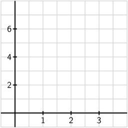
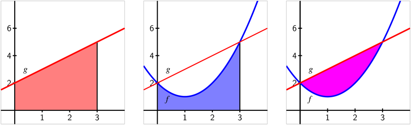
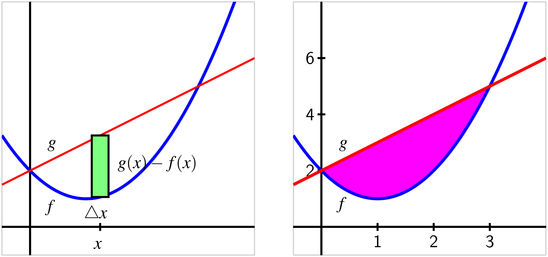
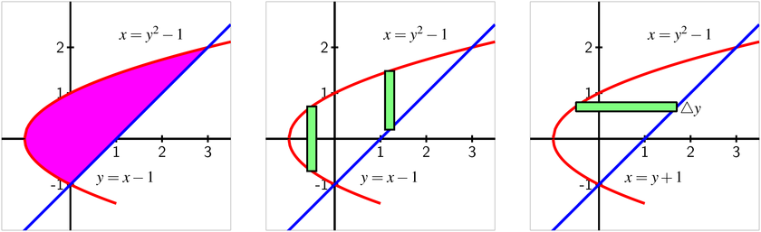
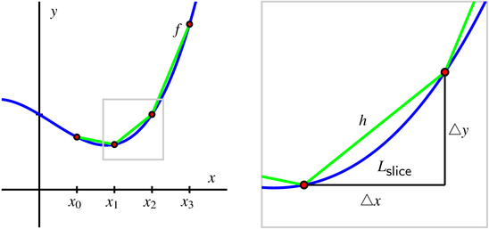

Section6.1Using Definite Integrals to Find Area and Length¶ permalink
{In this section, we strive to understand the ideas generated by the following important questions:
How can we use definite integrals to measure the area between two curves?
How do we decide whether to integrate with respect to \(x\) or with respect to \(y\) when we try to find the area of a region?
How can a definite integral be used to measure the length of a curve?
}
Subsection6.1.1Introduction
Early on in our work with the definite integral, we learned that if we have a nonnegative velocity function, \(v\), for an object moving along an axis, the area under the velocity function between \(a\) and \(b\) tells us the distance the object traveled on that time interval. Moreover, based on the definition of the definite integral, that area is given precisely by \(\int_a^b v(t) \, dt\). Indeed, for any nonnegative function \(f\) on an interval \([a,b]\), we know that \(\int_a^b f(x) \, dx\) measures the area bounded by the curve and the \(x\)-axis between \(x = a\) and \(x = b\).
Through our upcoming work in the present section and chapter, we will explore how definite integrals can be used to represent a variety of different physically important properties. In Preview Activity , we begin this investigation by seeing how a single definite integral may be used to represent the area between two curves.
Preview Activity
Consider the functions given by \(f(x) = 5-(x-1)^2\) and \(g(x) = 4-x\).
Use algebra to find the points where the graphs of \(f\) and \(g\) intersect.
Sketch an accurate graph of \(f\) and \(g\) on the axes provided, labeling the curves by name and the intersection points with ordered pairs.
Find and evaluate exactly an integral expression that represents the area between \(y = f(x)\) and the \(x\)-axis on the interval between the intersection points of \(f\) and \(g\).
Find and evaluate exactly an integral expression that represents the area between \(y = g(x)\) and the \(x\)-axis on the interval between the intersection points of \(f\) and \(g\).
What is the exact area between \(f\) and \(g\) between their intersection points? Why?
Figure6.1.1Axes for plotting \(f\) and \(g\) in Preview Activity
Subsection6.1.2The Area Between Two Curves
\knownindex{\lt main>area\lt /main>}
Through Preview Activity , we encounter a natural way to think about the area between two curves: the area between the curves is the area beneath the upper curve minus the area below the lower curve. For the functions \(f(x) = (x-1)^2 + 1\) and \(g(x) = x+2\), shown in Figure 6.1.2,
Figure6.1.2The areas bounded by the functions \(f(x) = (x-1)^2 + 1\) and \(g(x) = x+2\) on the interval \([0,3]\).
we see that the upper curve is \(g(x) = x+2\), and that the graphs intersect at \((0,2)\) and \((3,5)\). Note that we can find these intersection points by solving the system of equations given by \(y = (x-1)^2 + 1\) and \(y = x+2\) through substitution: substituting \(x+2\) for \(y\) in the first equation yields \(x+2 = (x-1)^2 + 1\), so \(x+2 = x^2 - 2x + 1 + 1\), and thus
\[
x^2 - 3x = x(x-3) = 0,
\]
from which it follows that \(x = 0\) or \(x = 3\). Using \(y = x+2\), we find the corresponding \(y\)-values of the intersection points.
On the interval \([0,3]\), the area beneath \(g\) is
\[
\int_0^3 (x+2) \, dx = \frac{21}{2},
\]
while the area under \(f\) on the same interval is
A slightly different perspective is also helpful here: if we take the region between two curves and slice it up into thin vertical rectangles (in the same spirit as we originally sliced the region between a single curve and the \(x\)-axis in Section 4.2), then we see that the height of a typical rectangle is given by the difference between the two functions. For example, for the rectangle shown at left in Figure 6.1.3,
Figure6.1.3The area bounded by the functions \(f(x) = (x-1)^2 + 1\) and \(g(x) = x+2\) on the interval \([0,3]\).
we see that the rectangle's height is \(g(x) - f(x)\), while its width can be viewed as \(\triangle x\), and thus the area of the rectangle is
The area between the two curves on \([0,3]\) is thus approximated by the Riemann sum
\[
A \approx \sum_{i=1}^{n} (g(x_i) - f(x_i)) \triangle x,
\]
and then as we let \(n \to \infty\), it follows that the area is given by the single definite integral
\begin{equation}
A = \int_0^3 (g(x) - f(x)) \, dx.
\label{E_IntOfDiff}\tag{6.1.2}\end{equation}
In many applications of the definite integral, we will find it helpful to think of a “representative slice” and how the definite integral may be used to add these slices to find the exact value of a desired quantity. Here, the integral essentially sums the areas of thin rectangles.
Finally, whether we think of the area between two curves as the difference between the area bounded by the individual curves (as in (6.1.1)) or as the limit of a Riemann sum that adds the areas of thin rectangles between the curves (as in (6.1.2)), these two results are the same, since the difference of two integrals is the integral of the difference:
Moreover, our work so far in this section exemplifies the following general principle.
{
If two curves \(y = g(x)\) and \(y = f(x)\) intersect at \((a,g(a))\) and \((b,g(b))\), and for all \(x\) such that \(a \le x \le b\), \(g(x) \ge f(x)\), then the area between the curves is
\(A = \int_a^b (g(x) - f(x)) \, dx.\)
}
In each of the following problems, our goal is to determine the area of the region described. For each region, (i) determine the intersection points of the curves, (ii) sketch the region whose area is being found, (iii) draw and label a representative slice, and (iv) state the area of the representative slice. Then, state a definite integral whose value is the exact area of the region, and evaluate the integral to find the numeric value of the region's area.
The finite region bounded by \(y = \sqrt{x}\) and \(y = \frac{1}{4}x\).
The finite region bounded by \(y = 12-2x^2\) and \(y = x^2 - 8\).
The area bounded by the \(y\)-axis, \(f(x) = \cos(x)\), and \(g(x) = \sin(x)\), where we consider the region formed by the first positive value of \(x\) for which \(f\) and \(g\) intersect.
The finite regions between the curves \(y = x^3-x\) and \(y = x^2\).
Subsection6.1.3Finding Area with Horizontal Slices
At times, the shape of a geometric region may dictate that we need to use horizontal rectangular slices, rather than vertical ones. For instance, consider the region bounded by the parabola \(x = y^2 - 1\) and the line \(y = x-1\), pictured in Figure 6.1.5. First, we observe that by solving the second equation for \(x\) and writing \(x = y + 1\), we can eliminate a variable through substitution and find that \(y+1 = y^2 - 1\), and hence the curves intersect where \(y^2 - y - 2 = 0\). Thus, we find \(y = -1\) or \(y = 2\), so the intersection points of the two curves are \((0,-1)\) and \((3,2)\).
We see that if we attempt to use vertical rectangles to slice up the area, at certain values of \(x\) (specifically from \(x = -1\) to \(x = 0\), as seen in the center graph of Figure 6.1.5), the curves that govern the top and bottom of the rectangle are one and the same. This suggests, as shown in the rightmost graph in the figure, that we try using horizontal rectangles as a way to think about the area of the region.
Figure6.1.5The area bounded by the functions \(x = y^2-1\) and \(y = x-1\) (at left), with the region sliced vertically (center) and horizontally (at right).
For such a horizontal rectangle, note that its width depends on \(y\), the height at which the rectangle is constructed. In particular, at a height \(y\) between \(y = -1\) and \(y = 2\), the right end of a representative rectangle is determined by the line, \(x = y+1\), while the left end of the rectangle is determined by the parabola, \(x = y^2-1\), and the thickness of the rectangle is \(\triangle y\).
Therefore, the area of the rectangle is
\[
A_{\mbox{{rect}} } = [(y+1) - (y^2-1)] \triangle y,
\]
from which it follows that the area between the two curves on the \(y\)-interval \([-1,2]\) is approximated by the Riemann sum
\[
A \approx \sum_{i=1}^{n} [(y_i+1)-(y_i^2-1)] \triangle y.
\]
Taking the limit of the Riemann sum, it follows that the area of the region is
\begin{equation}
A = \int_{y=-1}^{y=2} [(y+1) - (y^2-1)] \, dy.
\label{E_IntWRTy}\tag{6.1.3}\end{equation}
We emphasize that we are integrating with respect to \(y\); this is dictated by the fact that we chose to use horizontal rectangles whose widths depend on \(y\) and whose thickness is denoted \(\triangle y\). It is a straightforward exercise to evaluate the integral in Equation (6.1.3) and find that \(A = \frac{9}{2}\).
Just as with the use of vertical rectangles of thickness \(\triangle x\), we have a general principle for finding the area between two curves, which we state as follows.
{
If two curves \(x = g(y)\) and \(x = f(y)\) intersect at \((g(c),c)\) and \((g(d),d)\), and for all \(y\) such that \(c \le y \le d\), \(g(y) \ge f(y)\), then the area between the curves is
In each of the following problems, our goal is to determine the area of the region described. For each region, (i) determine the intersection points of the curves, (ii) sketch the region whose area is being found, (iii) draw and label a representative slice, and (iv) state the area of the representative slice. Then, state a definite integral whose value is the exact area of the region, and evaluate the integral to find the numeric value of the region's area. Note well: At the step where you draw a representative slice, you need to make a choice about whether to slice vertically or horizontally.
The finite region bounded by \(x=y^2\) and \(x=6-2y^2\).
The finite region bounded by \(x=1-y^2\) and \(x = 2-2y^2\).
The area bounded by the \(x\)-axis, \(y=x^2\), and \(y=2-x\).
The finite regions between the curves \(x=y^2-2y\) and \(y=x\).
In addition to being able to use definite integrals to find the areas of certain geometric regions, we can also use the definite integral to find the length of a portion of a curve. We use the same fundamental principle: we take a curve whose length we cannot easily find, and slice it up into small pieces whose lengths we can easily approximate. In particular, we take a given curve and subdivide it into small approximating line segments, as shown at left in Figure 6.1.7.
Figure6.1.7At left, a continuous function \(y = f(x)\) whose length we seek on the interval \(a = x_0\) to \(b = x_3\). At right, a close up view of a portion of the curve.
To see how we find such a definite integral that measures arc length on the curve \(y = f(x)\) from \(x = a\) to \(x = b\), we think about the portion of length, \(L_{\mbox{{slice}} }\), that lies along the curve on a small interval of length \(\triangle x\), and estimate the value of \(L{\mbox{{slice}} }\) using a well-chosen triangle. In particular, if we consider the right triangle with legs parallel to the coordinate axes and hypotenuse connecting two points on the curve, as seen at right in Figure 6.1.7, we see that the length, \(h\), of the hypotenuse approximates the length, \(L_{\mbox{{slice}} }\), of the curve between the two selected points. Thus,
By algebraically rearranging the expression for the length of the hypotenuse, we see how a definite integral can be used to compute the length of a curve. In particular, observe that by removing a factor of \((\triangle x)^2\), we find that
Furthermore, as \(n \to \infty\) and \(\triangle x \to 0\), it follows that \(\frac{\triangle y}{\triangle x} \to \frac{dy}{dx} = f'(x)\). Thus, we can say that
Taking a Riemann sum of all of these slices and letting \(n \to \infty\), we arrive at the following fact.
{
Given a differentiable function \(f\) on an interval \([a,b]\), the total arc length\knownindex{\lt main>arc length\lt /main>}, \(L\), along the curve \(y = f(x)\) from \(x = a\) to \(x = b\) is given by
Each of the following questions somehow involves the arc length along a curve.
Use the definition and appropriate computational technology to determine the arc length along \(y = x^2\) from \(x = -1\) to \(x = 1\).
Find the arc length of \(y = \sqrt{4-x^2}\) on the interval \(-2 \le x \le 2\). Find this value in two different ways: (a) by using a definite integral, and (b) by using a familiar property of the curve.
Determine the arc length of \(y = xe^{3x}\) on the interval \([0,1]\).
Will the integrals that arise calculating arc length typically be ones that we can evaluate exactly using the First FTC, or ones that we need to approximate? Why?
A moving particle is traveling along the curve given by \(y = f(x) = 0.1x^2 + 1\), and does so at a constant rate of 7 cm/sec, where both \(x\) and \(y\) are measured in cm (that is, the curve \(y = f(x)\) is the path along which the object actually travels; the curve is not a “position function”). Find the position of the particle when \(t = 4\) sec, assuming that when \(t = 0\), the particle's location is \((0,f(0))\).
\item To find the area between two curves, we think about slicing the region into thin rectangles. If, for instance, the area of a typical rectangle on the interval \(x = a\) to \(x = b\) is given by \(A_{\mbox{{rect}} } = (g(x) - f(x)) \triangle x,\) then the exact area of the region is given by the definite integral
\[
A = \int_a^b (g(x)-f(x))\, dx.
\]
\item The shape of the region usually dictates whether we should use vertical rectangles of thickness \(\triangle x\) or horizontal rectangles of thickness \(\triangle y\). We desire to have the height of the rectangle governed by the difference between two curves: if those curves are best thought of as functions of \(y\), we use horizontal rectangles, whereas if those curves are best viewed as functions of \(x\), we use vertical rectangles.
\item The arc length, \(L\), along the curve \(y = f(x)\) from \(x = a\) to \(x = b\) is given by
\[
L = \int_a^b \sqrt{1 + f'(x)^2} \, dx.
\]
\hrulefill
\begin{exercises}
\item Find the exact area of each described region.
The finite region between the curves \(x = y(y-2)\) and \(x=-(y-1)(y-3)\).
The region between the sine and cosine functions on the interval \([\frac{\pi}{4}, \frac{3\pi}{4}]\).
The finite region between \(x = y^2 - y - 2\) and \(y = 2x-1\).
The finite region between \(y = mx\) and \(y = x^2-1\), where \(m\) is a positive constant.
\item Let \(f(x) = 1-x^2\) and \(g(x) = ax^2 - a\), where \(a\) is an unknown real number. For what value(s) of \(a\) is the area between the curves \(f\) and \(g\) equal to 2?
\item Let \(f(x) = 2-x^2\). Recall that the average value of any continuous function \(f\) on an interval \([a,b]\) is given by \(\frac{1}{b-a} \int_a^b f(x) \, dx\).
Find the average value of \(f(x) = 2-x^2\) on the interval \([0,\sqrt{2}]\). Call this value \(r\).
Sketch a graph of \(y = f(x)\) and \(y = r\). Find their intersection point(s).
Show that on the interval \([0,\sqrt{2}]\), the amount of area that lies below \(y = f(x)\) and above \(y = r\) is equal to the amount of area that lies below \(y = r\) and above \(y = f(x)\).
Will the result of (c) be true for any continuous function and its average value on any interval? Why?